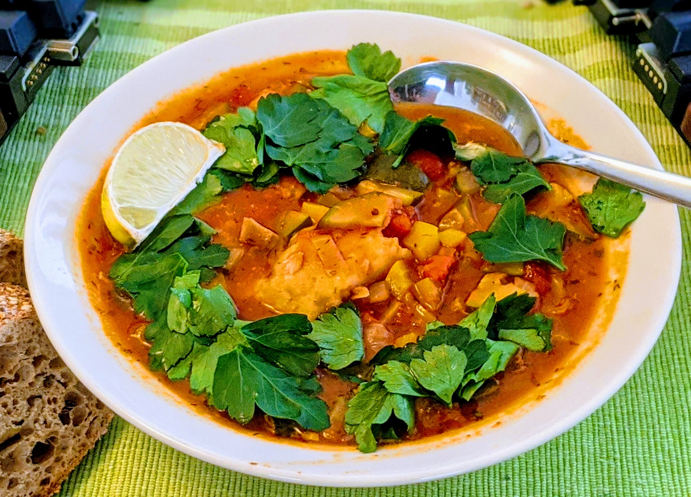

Ragoût de poisson blanc

Pour 3 personnes :
- 600-700g de poisson blanc
- Un poivron vert (ou jaune, si on ne trouve pas de vert)
- Un gros oignon
- Une grosse gousse d'ail
- Deux petites courgettes
- 120g de champignons de Paris
- Une boîte (de 400mL) de tomates concassées
- Une demi-cuillère à café d'origan séché
- Une demi-cuillère à café d'aneth séché
- 100mL de bouillon de poisson, ou de vin blanc
- Une demi-botte de persil
- Un citron vert
- Sel, poivre, beurre
- Éplucher et émincer l'oignon, le faire revenir au fond d'une mijoteuse dans du beurre à feu moyen-fort.
- Éplucher et émincer l'ail, l'ajouter, laver et couper le poivron en dés, l'ajouter, laver et couper les courgettes en dés, les ajouter, laver et couper les champignons en gros morceau, les ajouter.
- Ajouter les tomates, le bouillon ou vin blanc, saler, les herbes sèches, saler, poivrer, porter à ébullition puis laisser mijoter à feu très doux pendant 3 heures (ou dans une mijoteuse à réglage fort).
- Ajouter le poisson, laisser cuire une heure de plus.
- Laver et ciseler le persil, et servir le ragoût parsemé de persil avec du bon pain (points bonus si le pain est légèrement toasté), et un citron vert coupé en quartiers.
Retour à la liste des recettes